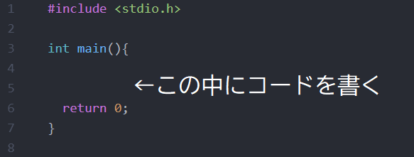
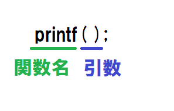
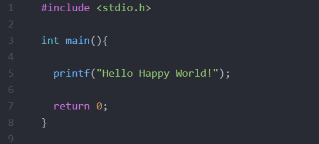

Ｃ言語には、こう書くのだ！という型があります。そのおおまかな型が以下の形です。
なんのこったいて感じですが、細かい理屈は今は置いておきましょう。
とりあえず、このint main()に囲まれている{}に色々コードを書いて、処理していきます。一番最後には必ず”return 0”を書きましょう。
Ｃ言語には、関数と呼ばれるものがあります。というより、全ては関数で動いているのです。以下をご覧ください。
関数は、関数名（引数）と表します。これはprintfというのが関数名で、()の中に入れるものを、引数（ひきすう）といいます。Ｃ言語では、こうした関数をたくさん使います。今はよくわからなくても、後々分かってきます。私も最初そうでした。取り敢えず最初は、このコードをこう使ったらこうやって動くんだ、というところから始めたほうがいいでしょう。
記念すべき１つ目の関数、それは、printf関数（プリントエフ）です。上の写真のやつですね。
関数名：printf
性質：()の中に書かれている文字を表示する。
printf(" ");とすることで、()の中の""で囲っている文字が表示されます。""自体は表示されません。書く文字は、英語でも日本語でも大丈夫です。
では、早速文字を表示してみましょう。ここでは、Hello Happy Worldと表示したいので、printf("Hello Happy World");とコードを打ちます。必ず()の後に;を付けてください。
実行結果
いかがでしたが。このようにprintf()の中に文字を入力することによって、コンソール上に表示できるんです。
つまり..... どういうことだってばタイよ。
うさと表示したければ、printf("うさ"); と表示したい文字列を""の中に入れるという事ですぐさ。